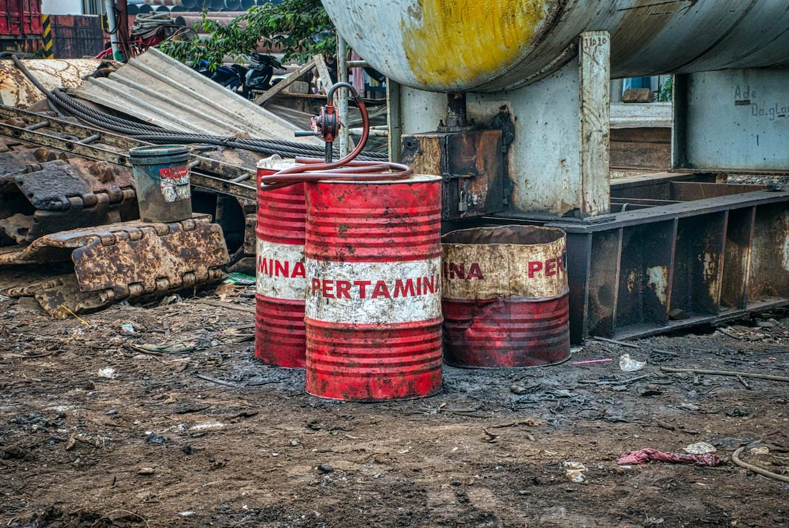

Conceitos Fundamentais sobre o Descarte de Produtos Químicos
O descarte de produtos químicos é um tema que envolve conhecimentos técnicos, legislação ambiental e responsabilidade socioambiental. Para compreender plenamente essa prática, é necessário entender os conceitos-chave relacionados a resíduos químicos, suas classificações, riscos e as formas seguras de manuseio e eliminação.
🔬 O que são produtos químicos?
Produtos químicos são substâncias naturais ou sintéticas utilizadas para provocar reações, conservar, limpar, tratar, proteger ou transformar materiais. Estão presentes em diversos setores da sociedade, como:
- Indústrias (tintas, solventes, adesivos);
- Agricultura (fertilizantes, pesticidas);
- Medicina (medicamentos, anestésicos, reagentes);
- Residências (produtos de limpeza, cosméticos, pilhas, baterias).
Esses produtos, quando descartados de forma inadequada, tornam-se resíduos perigosos, pois podem causar contaminação ambiental e problemas à saúde humana.
🗑️ O que é descarte de produtos químicos?
O descarte de produtos químicos consiste na eliminação ou tratamento de substâncias químicas que não serão mais utilizadas. Isso deve ser feito de forma segura, seguindo normas técnicas e ambientais, para evitar riscos de explosão, contaminação, intoxicação ou reações químicas perigosas.
No Brasil, o descarte é regulamentado por leis como:
- Lei nº 12.305/2010 (Política Nacional de Resíduos Sólidos);
- Resolução CONAMA nº 358/2005, que trata do descarte de resíduos de serviços de saúde;
- NBR 10.004 (ABNT), que classifica os resíduos quanto à periculosidade.
📚 Conceitos Importantes
- ♻️ Logística Reversa: Sistema onde o fabricante recolhe os resíduos de seus próprios produtos (como pilhas, medicamentos vencidos ou eletrônicos), assumindo a responsabilidade pelo tratamento ambientalmente adequado.
- ☢️ Resíduo Perigoso: Qualquer resíduo que apresente risco à saúde pública ou ao meio ambiente por conter substâncias inflamáveis, tóxicas, corrosivas, reativas, infecciosas ou radioativas.
- 🧪 Neutralização: Processo químico que transforma uma substância perigosa em um composto estável e seguro, reduzindo seu impacto ambiental.
- 🧯 Incineração Controlada: Técnica de queima em fornos especiais, com controle de temperatura e filtragem de gases tóxicos, usada para destruir resíduos perigosos.
- 🗂️ Coleta Seletiva Química: Separação de resíduos químicos por categoria (ácidos, bases, metais, solventes, etc.), evitando reações perigosas durante o transporte e o tratamento.
✅ Lista – Exemplos de Produtos Químicos de Uso Comum
- Produtos de limpeza: água sanitária, desinfetantes, desengordurantes.
- Cosméticos: tinturas, removedores de esmalte, sprays aerossóis.
- Medicamentos: comprimidos vencidos, antibióticos, xampus medicinais.
- Materiais escolares/laboratoriais: colas, solventes, reagentes.
- Equipamentos: pilhas, baterias, toners, cartuchos de tinta.
📊 Tabela – Classificação dos Resíduos Químicos
| Categoria | Exemplo de Produto | Risco Potencial | Destino Adequado |
|---|---|---|---|
| Inflamável | Tintas, álcool, removedores | Incêndio, explosão | Armazenamento específico + incineração |
| Corrosivo | Ácidos, soda cáustica | Queimaduras, destruição de materiais | Neutralização antes do descarte |
| Tóxico | Pesticidas, solventes industriais | Intoxicação, efeitos neurológicos | Tratamento especializado |
| Reativo | Peróxidos, hipocloritos | Reações violentas com água ou calor | Armazenamento separado e monitorado |
| Farmacêutico | Medicamentos vencidos | Contaminação da água e intoxicação | Devolução em farmácias e postos de coleta |
📷 Produtos químicos domésticos e industriais.

Descrição: Barris de produtos químicos descartados.
Fonte: SkipShapiro Enterprises. (https://shapiroe.com/blog/chemical-waste-disposal/)